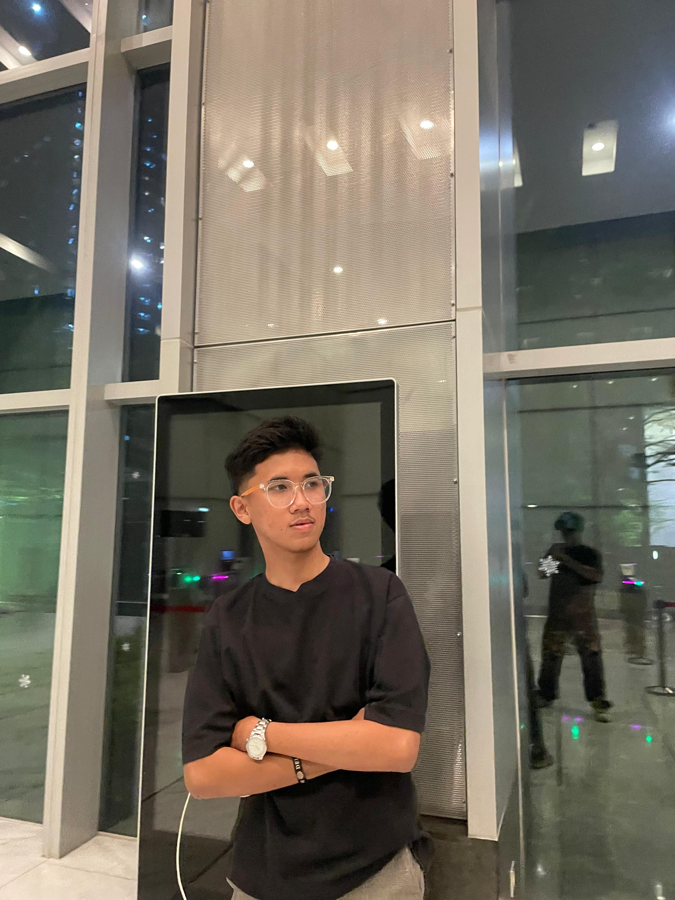
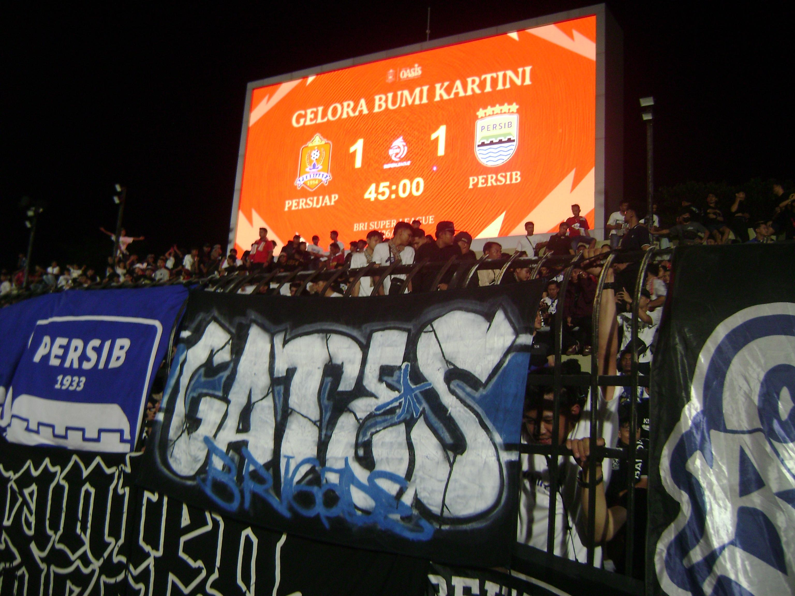
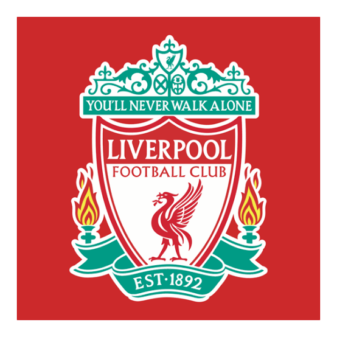
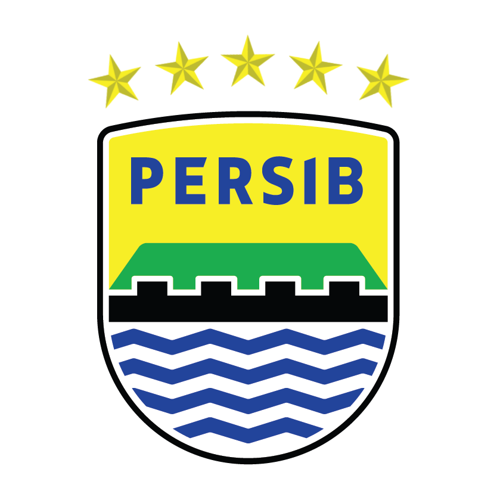

HELLO, NICE TO MEET YOU
Hi, I'm
Ramzaihan!
A little introduction about who I am, what I love, and the dreams I want to achieve.

A LITTLE MORE ABOUT MYSELF
Who I am,
beyond the name.
My story is shaped by the people around me, the experiences I have, and the things I want to learn along the way.
A student with big dreams
Nama saya Ramzaihan Sudiana. Saya lahir di Bandung pada 24 Oktober 2005 dan saat ini menempuh pendidikan di Universitas Pendidikan Indonesia, Program Studi Teknik Logistik.
Saya memiliki ketertarikan pada dunia ekspor-impor dan logistik. Saya juga termasuk orang yang percaya diri dan mudah bergaul. Salah satu sosok yang menginspirasi saya untuk terus berkembang adalah kakak saya.
THINGS THAT MAKE ME, ME
Football is more
than just a game.

Ketertarikan saya terhadap sepak bola sudah tumbuh sejak kecil dan masih menjadi salah satu hal yang saya sukai hingga saat ini. Saya memiliki klub favorit, yaitu Liverpool FC dan Persib Bandung. Salah satu impian saya adalah menyaksikan pertandingan mereka secara langsung di stadion.
Bagi saya, sepak bola bukan hanya tentang pertandingan, tetapi juga menjadi sarana untuk menjalin hubungan dan bertukar cerita dengan orang lain. Melalui obrolan dan pengalaman bersama sesama penggemar, saya bisa memperoleh pengetahuan baru, mengenal sudut pandang yang berbeda, serta memperluas wawasan.

Liverpool FC
One of the clubs I dream of watching live at its home stadium.

Persib Bandung
Tim kebanggaan Bandung yang punya tempat tersendiri bagi saya.
THE PERSON WHO INSPIRES ME
My greatest role model is my mother.
Ibu merupakan sosok yang sangat berarti dalam kehidupan saya. Dari beliau, saya belajar tentang ketulusan, kesabaran, tanggung jawab, dan pentingnya terus berusaha meskipun menghadapi berbagai tantangan.
Pengorbanan dan perhatian yang beliau berikan menjadi motivasi bagi saya untuk terus belajar dan berkembang. Saya ingin membanggakan ibu melalui usaha, pencapaian, dan keputusan yang saya ambil dalam kehidupan.
WHERE I WANT TO GO
Turning dreams
into real plans.
Saya ingin terus mengembangkan kemampuan di bidang logistik dan perdagangan. Bagi saya, masa depan dibangun melalui kemauan untuk belajar, pengalaman, dan keberanian mengambil kesempatan.
Saya berharap dapat membangun karier yang baik, menjadi pribadi yang mandiri, serta memanfaatkan ilmu yang saya dapatkan untuk memberikan manfaat bagi keluarga dan lingkungan sekitar.
Grow in Logistics
Memperdalam ilmu dan pengalaman di bidang logistik serta rantai pasok.
Explore the World
Mengenal tempat baru dan melihat pertandingan sepak bola secara langsung.
Make Family Proud
Mencapai kesuksesan melalui usaha dan membahagiakan keluarga.
THE PERSON I HOPE TO BECOME
A future built
with purpose.
Bagi saya, kesuksesan bukan hanya tentang pencapaian pribadi atau materi, tetapi juga tentang kemampuan untuk memberikan manfaat bagi orang-orang di sekitar saya, terutama keluarga.
Saya ingin menjadi pribadi yang mandiri, memiliki karier yang baik, dan terus berkembang tanpa melupakan orang-orang yang telah mendukung perjalanan saya. Saya menyadari bahwa setiap tujuan membutuhkan proses, konsistensi, dan kemauan untuk terus belajar.
Saya mungkin belum mengetahui seluruh hal yang akan saya hadapi di masa depan, tetapi saya ingin terus melangkah, memanfaatkan kesempatan, dan membangun kehidupan yang sesuai dengan nilai-nilai yang saya percaya.
THANK YOU FOR BEING HERE
Thank You.
This is just a small part of my story. There are still many things I want to learn, places I want to visit, and dreams I want to achieve. I believe every step has its own meaning, and the journey is far from over.
Thank you for taking the time to get to know me. I hope this is the beginning of many new experiences and opportunities.
Ramzaihan Sudiana
Universitas Pendidikan Indonesia